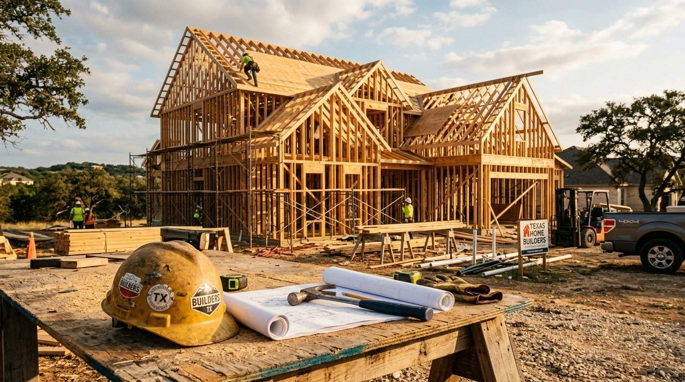

Building from the ground up should not require two closings, two appraisals, and two sets of fees. Our one-time-close construction-to-permanent loan rolls construction financing and your final mortgage into a single transaction.

Construction loans are complex on the back end. We carry the complexity so you can focus on choosing the right builder and design.
Construction loans suit borrowers building from the ground up, not buying existing inventory.
Every Guarantee Mortgage loan officer walks you through each step in plain English. No surprises, no jargon, no hidden fees.
Construction-specific application. We collect plans, budget, builder details, and your file.
Pre-qualification covers both the construction loan and the permanent take-out so the project is fully financed.
Close the loan. Builder begins. Inspections at each milestone trigger draws.
When construction completes (typically 9 to 12 months), the loan converts to your permanent fixed-rate mortgage.
One short application, 200+ lenders bidding for your business. See your real rate, your real payment, and your closing costs before you commit.